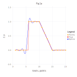
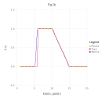

Example Usage
Let's interpolate function $f(x)$
by values of the function in knots $\{1, 2, 3, ..., 20\}$ (case A) and by values of the function and values of its first and second derivatives in the same knots (case B).
A)
using NormalSplines
x = collect(1.0:1.0:20) # function knots
u = x.*0.0 # function values in knots
for i in 6:10
u[i] = 1.0
end
for i in 11:14
u[i] = -0.2 * i + 3.0
end
# build a twice-differentiable spline
# by values of function in knots
interpolate(x, u, RK_W3())
p = collect(1.0:0.2:20) # evaluation points
σ = evaluate(p)
Evaluate the spline at some points:
σ = evaluate([3.1, 8.1, 18.1])3-element Array{Float64,1}:
0.011393705917095532
1.0073991500356538
0.0006024718882637554B)
using NormalSplines
x = collect(1.0:1.0:20) # function knots
u = x.*0.0 # function values in knots
for i in 6:10
u[i] = 1.0
end
for i in 11:14
u[i] = -0.2 * i + 3.0
end
s = x # function first derivative knots
v = x.*0.0 # function first derivative values
for i in 11:14
v[i] = -0.2
end
t = x # function second derivative knots
w = x.*0.0 # function second derivative values
# build a twice-differentiable spline by values of function,
# and values of its first and second derivatives in knots
interpolate(x, u, s, v, t, w, RK_W3())
p = collect(1.0:0.2:20) # evaluation points
σ = evaluate(p)
Evaluate the spline at some points:
σ = evaluate([3.1, 8.1, 18.1])3-element Array{Float64,1}:
5.458240272437034e-7
0.9999998851273801
-6.113968993304297e-7Q & A
Q1. Question: The call
interpolate(x, u, RK_H3())cause the following error: PosDefException: matrix is not positive definite; Cholesky factorization failed. What is a reason of the error and how to resolve it?
A1. Answer: Creating a Bessel Potential kernel object with omitted parameter ε means that this paramter will be estimated during interpolating procedure execution. It might happen that estimated value of the ε is too small and corresponding Gram matrix of linear system of equations which defines the normal spline coefficients is very ill-conditioned and it lost its positive definiteness because of floating-point rounding errors.
There are two ways to fix it.
- We can get the estimated value of
εby calling functionget_epsilon():
ε = get_epsilon()then we could try to call the interpolate function with greater ε value of the reproducing kernel parameter:
interpolate(x, u, RK_H3(10.0*ε))- We may change the precision of floating point calculations. Namely it is possible to use Julia standard BigFloat numbers or Double64 - extended precision float type from the package DoubleFloats:
using DoubleFloats
x = Double64.(x)
u = Double64.(u)
interpolate(x, u, RK_H3())This answer also applies to types RK_H1() and RK_H2().
Q2. Question: The call
interpolate(x, u, RK_W3())cause the following error: PosDefException: matrix is not positive definite; Cholesky factorization failed. How to resolve it?
A2. Answer: The reason of that exception is the Gram matrix of linear system of equations which defines the normal spline coefficients is very ill-conditioned and it lost its positive definiteness because of floating-point rounding errors.
The only way to fix it - is using floating-point arithmetic with extended precision. It can be provided by Julia standard BigFloat type or Double64 type from the package DoubleFloats:
using DoubleFloats
x = Double64.(x)
u = Double64.(u)
interpolate(x, u, RK_W3())This answer also applies to types RK_W1() and RK_W2().
Q3. Question: The following calls
interpolate(x, u, RK_H3())
σ = evaluate(p)produce the output which is not quite satisfactoty. Is it possible to improve the quality of interpolation?
A3. Answer: Creating a Bessel Potential kernel object with omitted parameter ε means that this paramter will be estimated during interpolating procedure execution. It might happen that estimated value of the ε is too large and it is possible to use a smaller ε value which would result in better quality of interpolation. We can get the estimated value of ε by calling function get_epsilon():
ε = get_epsilon()and get an estimation of the problem's Gram matrix condition number by calling get_cond() function:
cond = get_cond()In a case when estimated condition number is not very large, i.e. less than $10^{12}$ using standard Float64 floating-point arithmetic, we may attempt to build a better interpolation spline by calls:
interpolate(x, u, RK_H3(ε/5))
σ = evaluate(p)Another option is using a smaller value of the ε and perform calculations using extended precision floating-point arithmetic.